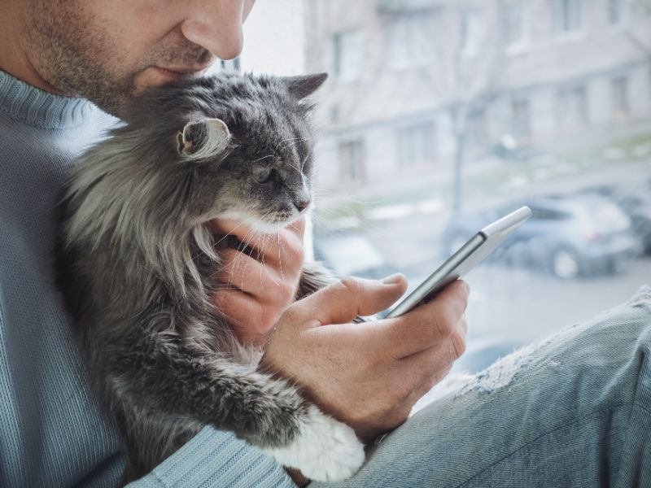

Listen to some of our users
Greg from Winnipeg
"I had spent five years as a single house-cat. I've lost interest in chasing artificial mice. I have a warm spot by a window overlooking my owner’s rusted mailbox that I never move from. My owner just brought home this Japanese bobtail kitten who endlessly pounces on shoestrings. I felt like I needed a change. It wasn’t hard, I downloaded the app, before I knew it, I was chatting up Norwegian forest cats on the west coast. "
Daniel from Akron, Ohio
"It's pretty nice. I message someone and that message looms for several days before I lose all hope in a reply and start binge eating again."
Libby from Gilbert, Arizona
"I can't say enough about this site. I used to think I liked anime and yarn, but now I realize that what I like is directly shaped by what I most fear -- and that, that is being alone for the rest of my life."
Carol from Kalamazoo
"I literally thought this was my PostMates app. Did you steal their logo?"
Dave from Seattle
"I don't even have to be 'Dave from Seattle', I can be Lamar from Boulder. It's really not at all difficult to deceive people on this website."